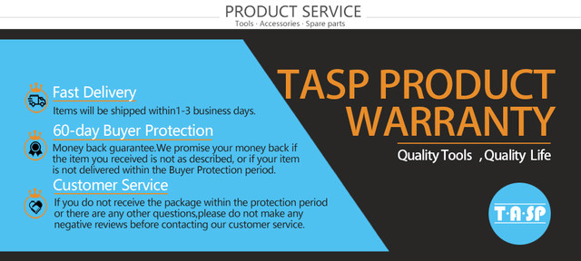
TASP 287pcs Rotary Tool Accessory Kit
- The TASP 287pcs Kit are perfect for a wide variety of applications such as: engraving, carving, routing, cutting, sanding, polishing and more.
- It contains a variety of high quality accessories which allow the user to perform a range of applications.
- Shank Size: 3.2mm(1/8").
- Collet size:1.6/2.4/3.2mm.(collet shank size 4.8mm,metric )
- Can be used on electric rotary tools.
Note: THE ROTARY TOOL IS NOT INCLUDED!!!
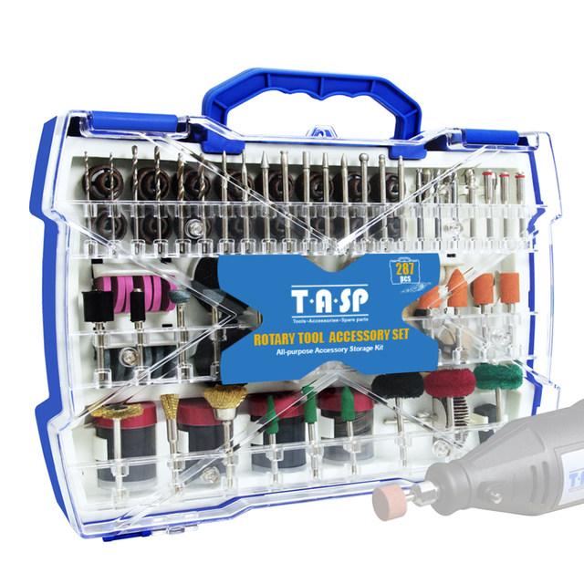
Product applications:
It can be used for engraving, grinding, cutting,drilling, polishing and so on.
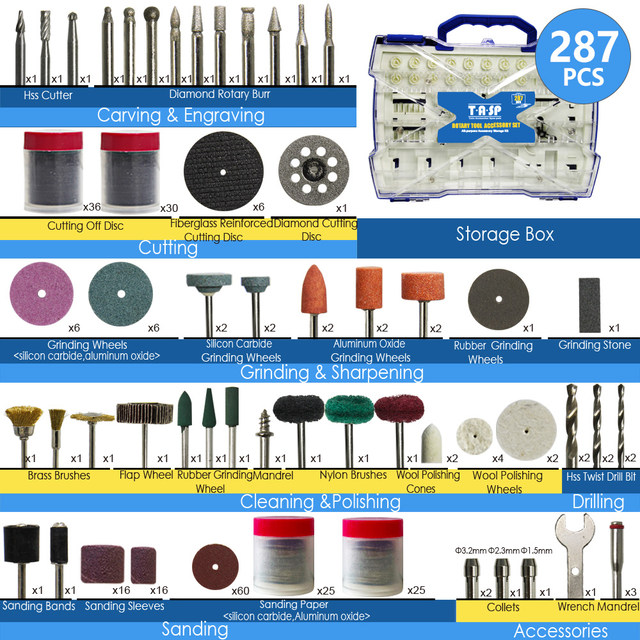
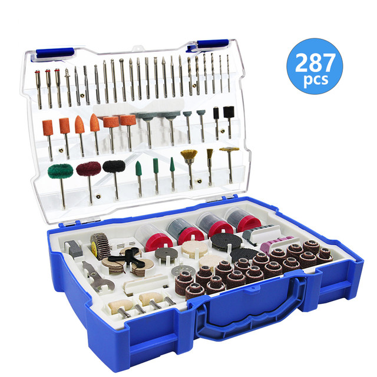
Cutting & Scraping
- Cutting accessories are ideal for cutting a variety of materials including metals, soft and hard woods, fiberglass, plastics and metals.
- Scraping accessories can be used in cleaning and surface preparation work on a variety of materials and adhesives.
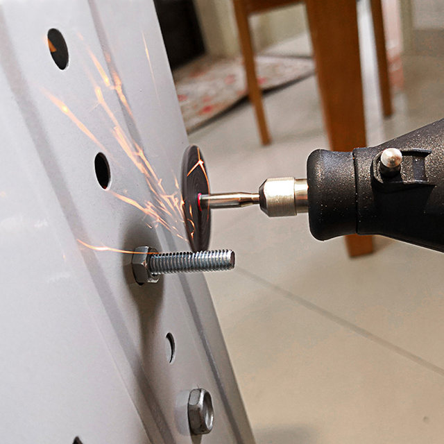
Etching & Engraving
Engraving cutters can be used for etching, drawing, lettering, and decorating on soft metals, plastics and glass to achieve a variety of desired effects.
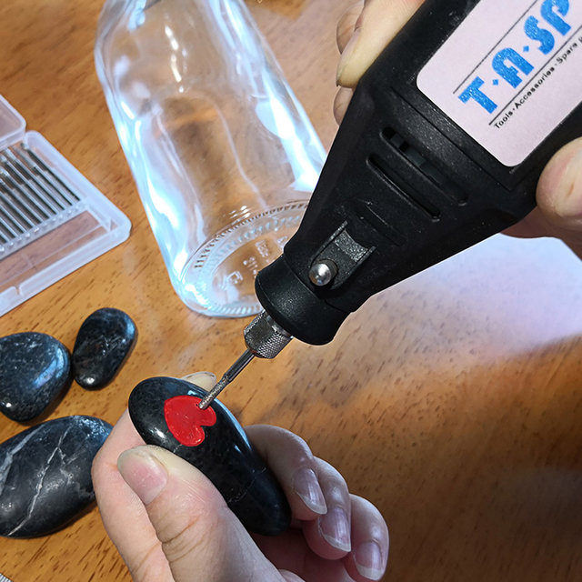
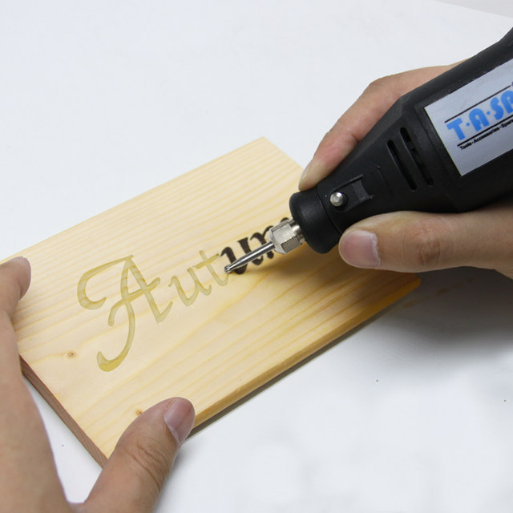
Routing & Drilling
Routing accessories are used for routing, inlaying and mortising in wood and other soft materials. High-speed drill bits are ideal for drilling into wood, plastics and soft metals.
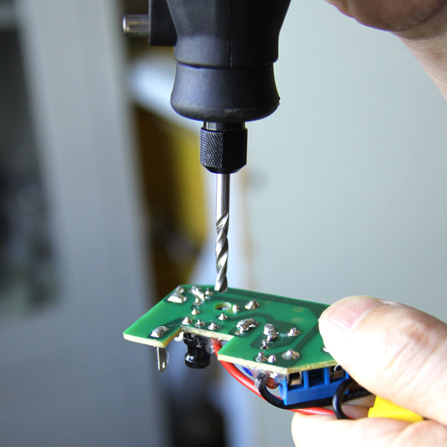
Cleaning & Polishing
Cleaning and polishing accessories are ideal for cleaning, deburring and surface-finishing items on flat surfaces and in hard-to-reach places, such as slots.
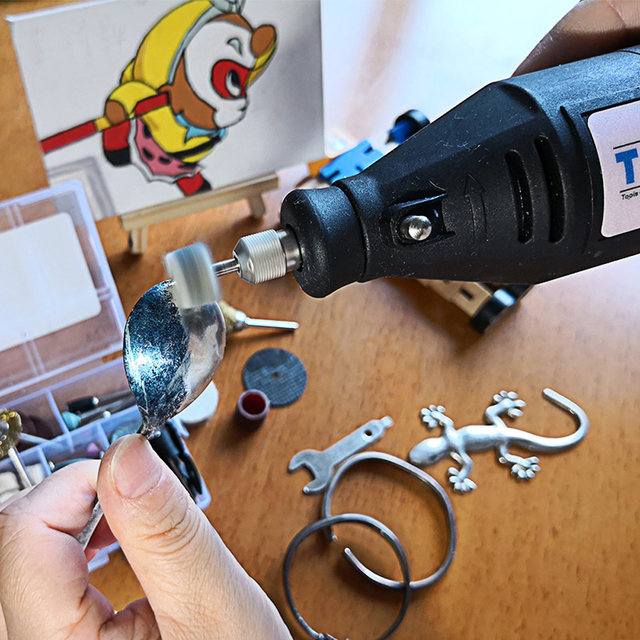
Sanding & Grinding
TASP offers a selection of sanding accessories for the rough shaping and smoothing of wood and fiberglass, and removing rust from metal surfaces.
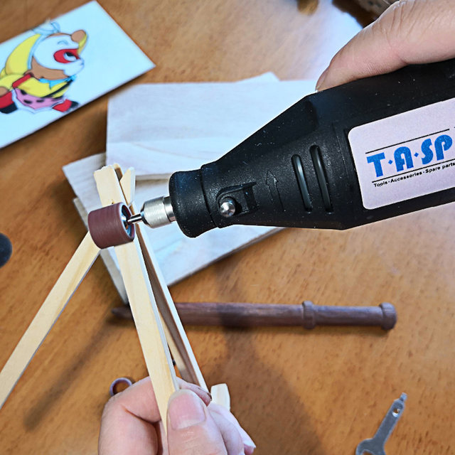
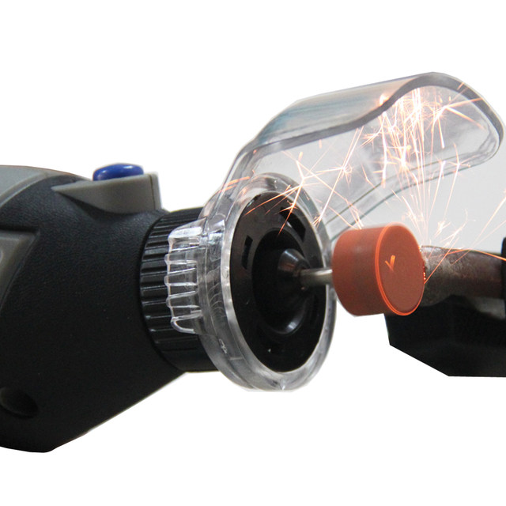
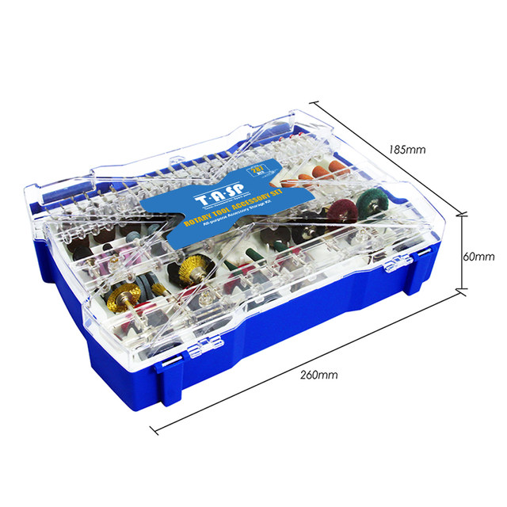
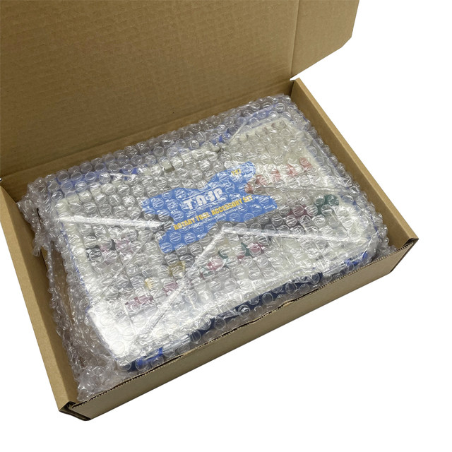